Intervenante · Modératrice · Enseignante
Interventions
Interventions, tables rondes et cours universitaires sur l’IA, les affaires internationales, l’arbitrage sportif et le droit de l’Union, de Paris à Séoul.
20interventions
6pays
2022depuis
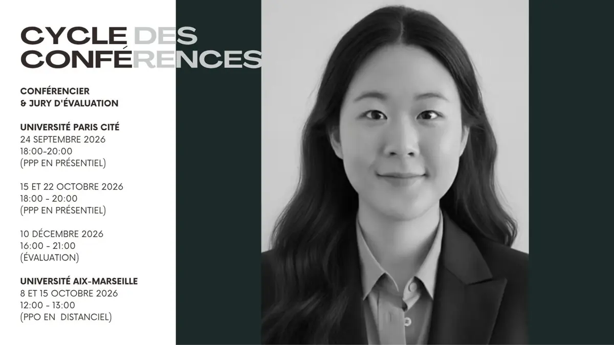
En ce moment · automne 2026
Cycle des conférences
Conférencière et membre du jury d’évaluation du Projet personnel et professionnel (L3) à l’Université Paris Cité, et conférencière à Aix-Marseille Université.
2026
- Salon de l’Etudiant · 2026 Study Abroad FairModératrice et intervenanteEntreprises coréennes en France : métiers et opportunités professionnelles · en tant que secrétaire générale de la CCICFParis, France
- IAKL Annual ConferenceIntervenanteBetween Automation and Autonomy: Synergies and Challenges at the Intersection of AI, International Business and Legal PracticeLondres, Royaume-Uni
- Aix-Marseille Université · Conference cycleConférencièreProjet personnel et professionnel des étudiants de L3Paris, France
- Université Paris Cité · Conference cycleConférencière et juryProjet personnel et professionnel des étudiants de L3Paris, France
2025
- Université Paris Cité · Conference cycleConférencière et juryProjet personnel et professionnel des étudiants de L3Paris, France
- AFEC Jeunes · Sports & EU Law ConferenceModératriceRound Table 4: Sports GovernanceParis, France
- Station F · HEC Incubator · JETRO & IndiaAI SeminarIntervenanteNavigating French Incorporation: A Legal Guide for International StartupsStation F, Paris
- IAKL Annual ConferenceIntervenanteRegulatory and trade requirements for conducting international businessSéoul, Corée du Sud
- Paris Arbitration WeekIntervenanteBeating the Post-Paris 2024 Olympic Blues: Experiences and Insights on CAS Arbitration ProceduresParis, France
- IAKL European ConferenceCo-organisatrice et intervenanteEU Regulation and AI: Understanding the Intersection of Technology, Law, and EthicsBerlin, Allemagne
- AFEC · Board of DirectorsCoordinatricePresentation of a Sustainable Development Law Reform Proposal ProjectParis, France
2024
- France-Korea Chamber of Commerce (CCICF)IntervenanteLabour Law: HarassmentParis, France
- Université Paris Cité · Conference cycleConférencièreComparative study of the legal profession in France and Korea: pathways, practices and innovationsParis, France
- Station F · HEC Incubator · KSC SeminarIntervenanteLegal and Intellectual Property ConsiderationsStation F, Paris
- IAKL European ConferenceIntervenanteFair Play Games: Professional Athletes and Anti-doping RulesBruxelles, Belgique
2023
- Station F · HEC Incubator · KSC SeminarIntervenanteConducting Business in France: a Legal ApproachStation F, Paris
- IAKL Annual ConferencePanélisteFinance session: Digital Asset Regulation in the EUSéoul, Corée du Sud
- Université Paris Cité · Conference cycleConférencièreProjet personnel et professionnel des étudiants de L3Paris, France
2022
- Universitat Pompeu Fabra · Sustainability, Digital Markets & the Digital Revolution International ConferenceIntervenanteGreening Consumer Welfare and Commercial Greenwashing Practices: Towards Extraterritoriality, Cooperation and Costs & Benefits RedistributionBarcelone, Espagne
- IAKL European ConferenceIntervenanteNew Business Modus Operandi in the Digital EraParis, France
Événements passés
Conférence annuelle de l’IAKL · Londres


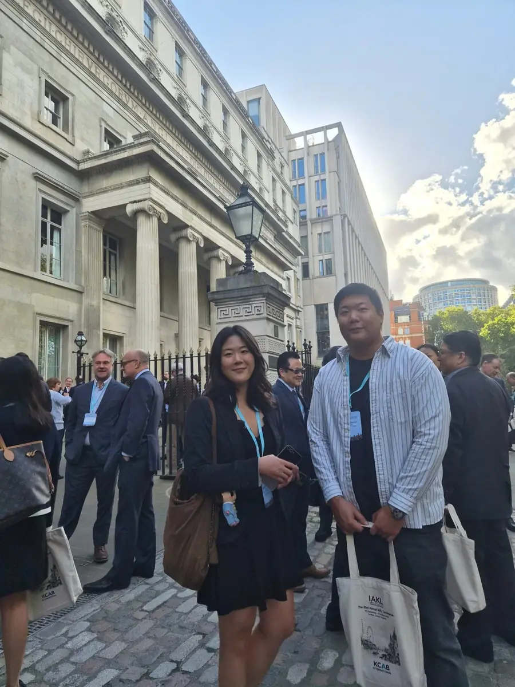
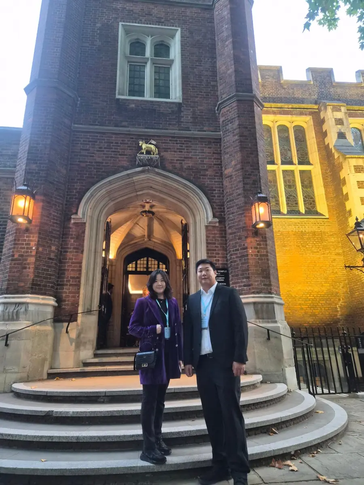
Salon de l’Étudiant des Grandes Écoles 2026

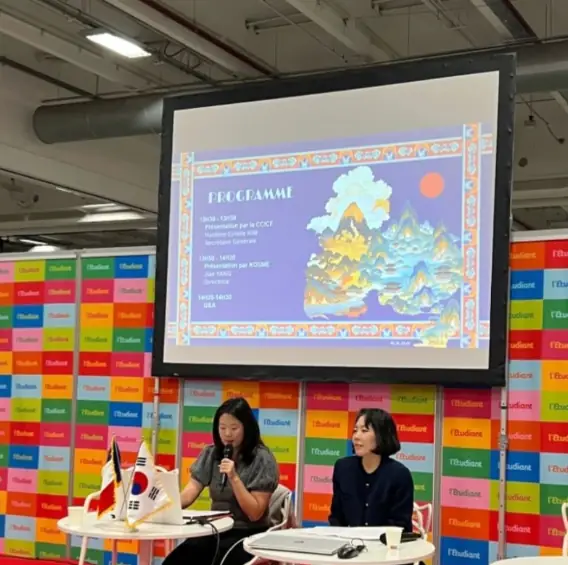
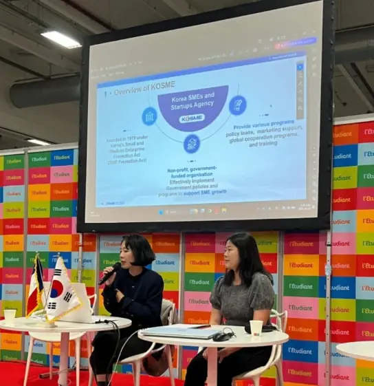
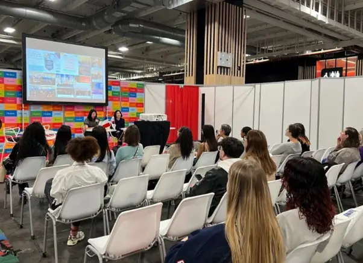
Paris Arbitration Week
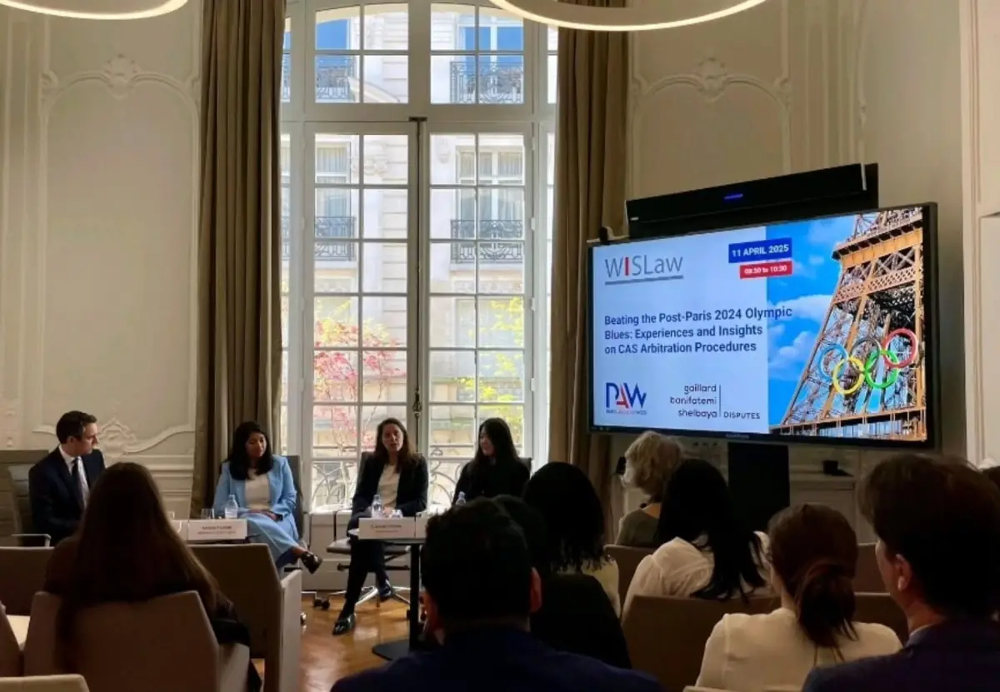
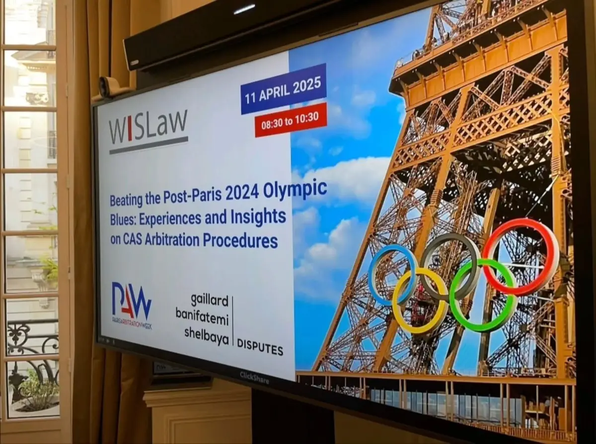
Autres moments
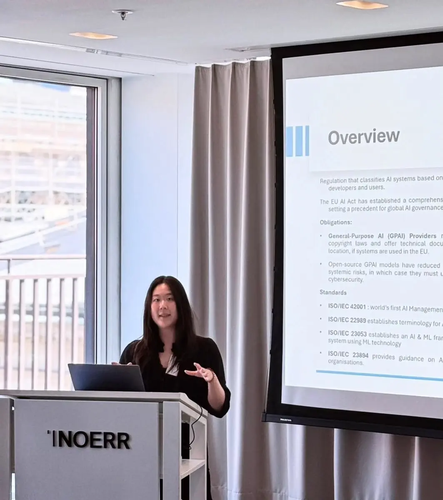
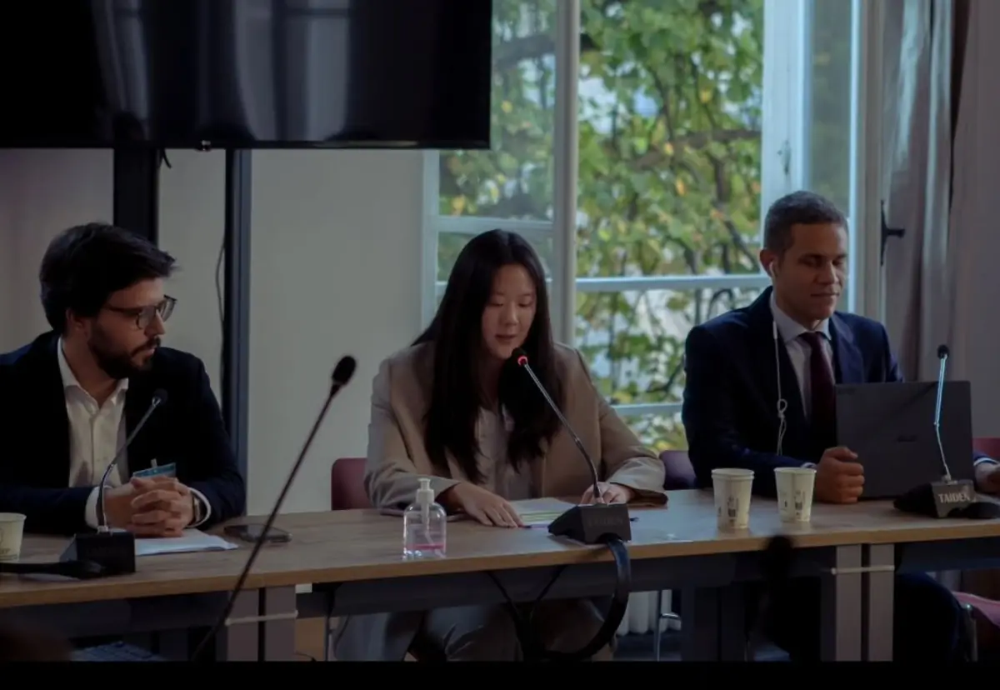
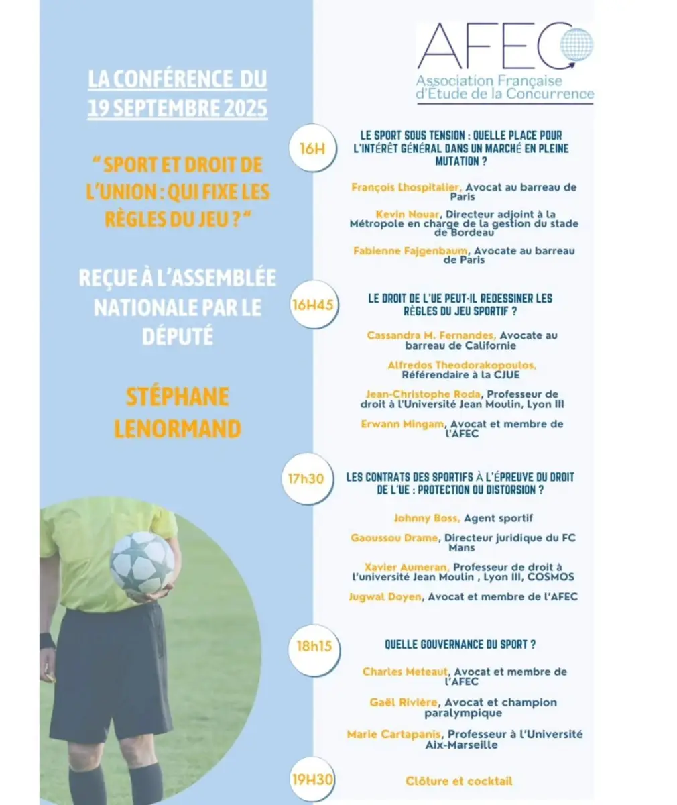
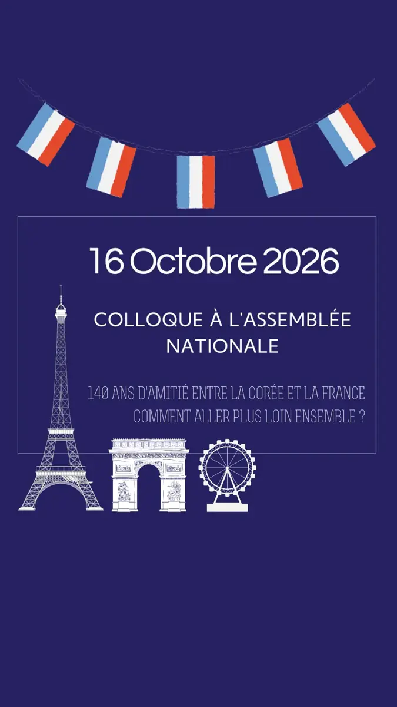
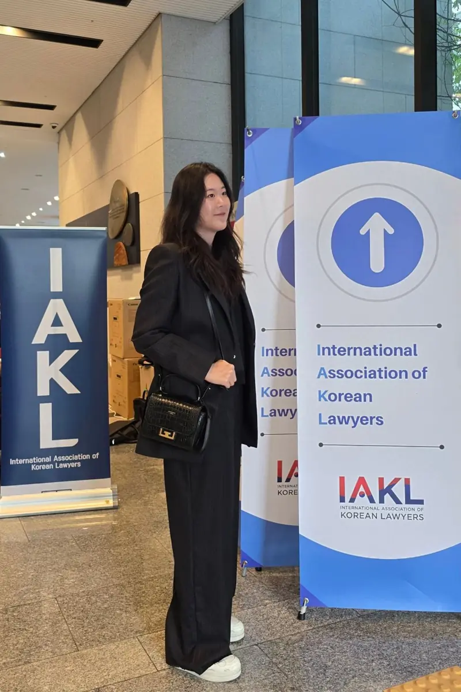
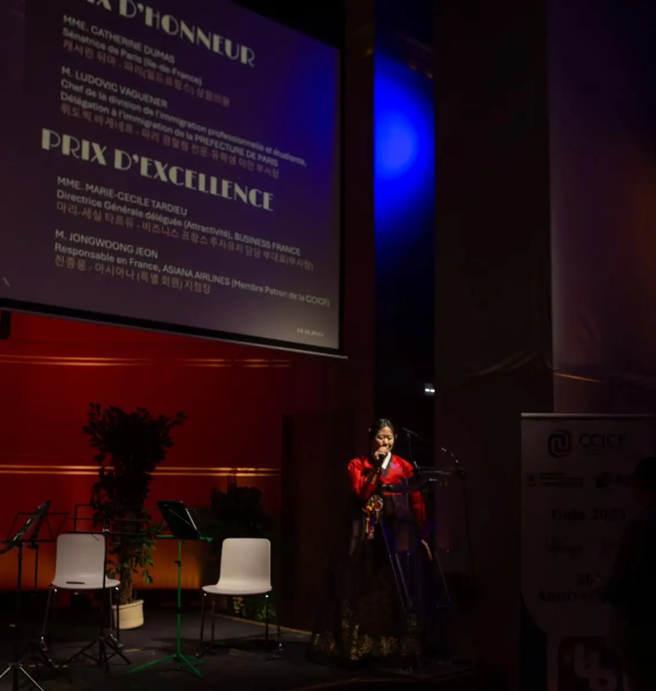
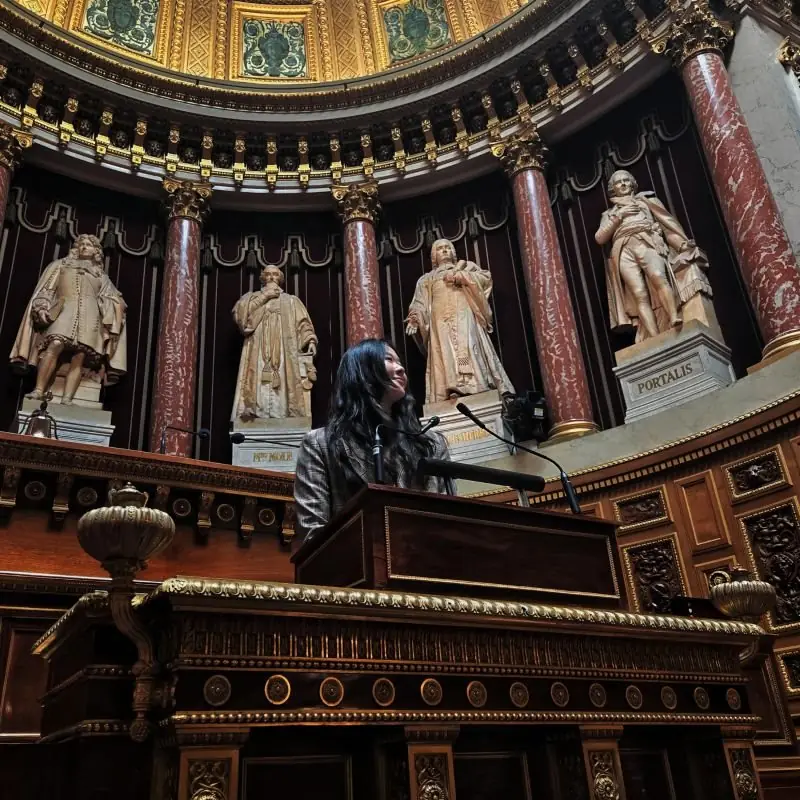
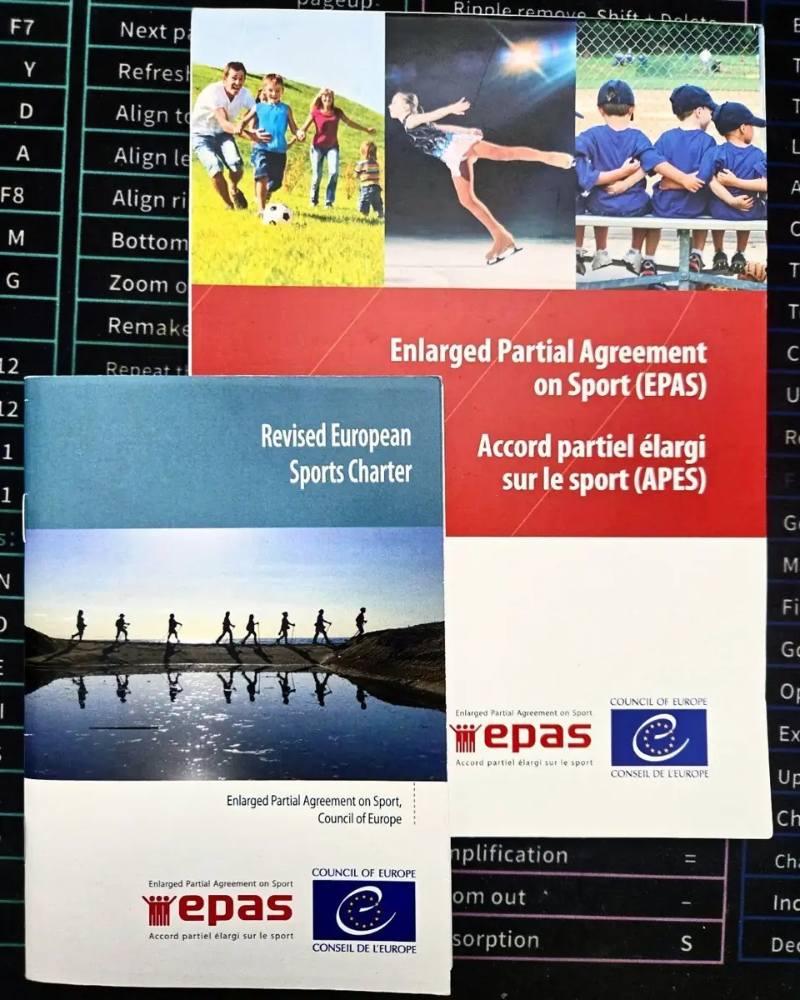